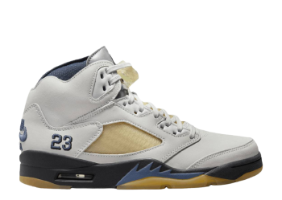
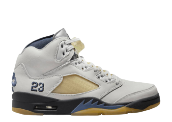

Sneakers
Avant de signer chez Nike en 1984, Michael Jordan portait des Converse,
marque de loin numéro 1 à l'époque sur les parquets de la NBA.
Pour l'anecdote, rappelons que la marque Converse,
suite à de grosses difficultés financières en 2002, a été rachetée par Nike en juin 2003,
pour la modique somme de 269 millions d'euros ! Au départ, Michael Jordan ne voulait pas
signer avec Nike qui était, à cette époque, une toute jeune marque. Michael Jordan voulait
plutôt aller chez Adidas, très à la mode aux États-Unis, au début des années 1980.
C'est sous la pression de ses parents que Michael Jordan a fini par écouter ce que Nike avait à lui proposer. Nike lui a déroulé le tapis rouge et lui a d'emblée promis la création d'un modèle pro à son nom, la « Nike Air Jordan 1».L'agent de Michael Jordan, David B. Falk, a aussi beaucoup œuvré dans le cadre de cette négociation, et a d'ailleurs été ensuite surnommé « His Falkness»!
L'aventure des Nike Air Jordan a donc commencé en 1985 et n'est toujours pas terminée à ce jour, en 2023, même si Michael Jordan a définitivement stoppé sa carrière NBA chez les Wizards de Washington depuis 2003, longtemps après la retraite sportive qui il avait pris en 1998, l'année de sa consécration avec son second three-peat* au sein des Chicago Bulls.
Voici quelques modèles de sneakers Air Jordan incontournables:
JORDAN I
JORDAN IV
JORDAN V
 
